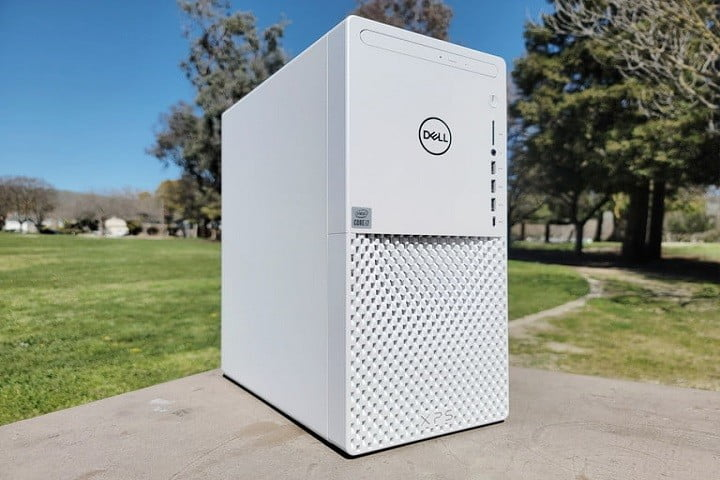
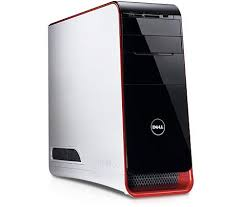
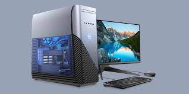
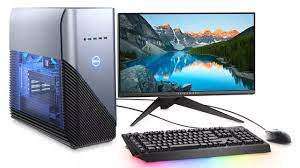

Dell XPS 8940
El límite del sistema es la GPU Nvidia RTX 2060 Super y
un Intel Core i9 de 10 núcleos; ese desempeño es increíble,
aunque con las opciones más modestas también puedes obtener
un rendimiento adecuado por tu dinero.
Elijas lo que elijas, a pesar de ser compacta y fácil de
transportar, todo es modular y expandible. Si quieres algo para
gaming tal vez te convenga mirar en otro lado, pero la XPS 8940
tiene algo para todos.
|

Dell Studio XPS 9000
Potencia impresionante. Capacidades Turbo boost. Diseñado para
que tome el control. La nueva Dell Studio XPSTM 9000 es la computadora de
escritorio multimedia emblemática de Dell. Diseño elegante. Gran capacidad de
expansión El nivel de rendimiento lo dejará sin palabras cuando maneje los
contenidos digitales y de entretenimiento más exigentes. Verá sus necesidades
ampliamente satisfechas con un diseño que brinda la capacidad de expansión que
solo las computadoras de escritorio DellTM Studio pueden ofrecer.
Todo esto presentado en un diseño angulado, elegante, con detalles color
Naranja carmesí brillante que lo cautivarán.
|

Dell One 5400
Su nuevo procesador Intel Core i5-1135G7 Processor (8MB Cache, up to 4.2 GHz) de 11va generación,
y su memoria RAM de 12GB, 8GB+4GB, DDR4, 3200MHz te permitirán trabajar fácilmente tus multitareas,
para abrir varias páginas del navegador, escuchar música o descargar documentos, todo de manera simultánea y sin interrupciones.
Descubre su impresionante pantalla de 24” FHD (1920 x 1080) Anti-Glare Narrow Border AIT Infinity Touch Display,
con borde delgado, te mostrará imágenes y videos en alta resolución, para experiencia inmersiva al visualizar tu entretenimiento streaming.
Guarda tus archivos y documentos sin preocuparte por el espacio disponible,
gracias a su disco duro con 1 TB HDD de capacidad. Contarás adicionalmente con su unidad de
almacenamiento SSD de 256 GB, para que tus programas y sistema operativo tengan una velocidad impactante
|

Dell Optiplex 7020 Tower
Acerca de este artículo
*Tipo de RAM del sistema, ddr3_sdram
*Peso del paquete: 6.554 kg
*Sistema operativo, Windows 10 Pro
*Dimensiones del paquete: 19,685 x 48,895 x 41,91 cm
|

Dell Inspiron DT 5680
Con un procesador de 8va generación Intel Core i5-8400 hasta 4.0 GHz,
la computadora Dell Inspiron DT 5680 logra garantizar máximo rendimiento.
Cuenta con una memoria RAM DDR4 de 8GB expandibles hasta 32 GB, una tarjeta
gráfica NVIDIA GeForce GTX 1060 de 6 GB y almacenamiento de 1 TB. El OS es Windows 10 (64bits).
Esta Mid-Tower está diseñada para el óptimo funcionamiento del flujo de aire,
reducir el ruido, así como luces LED para mayor vistosidad.
Tienen 9 puertos USB, HDMI, un Display Port, así como un Super Speed USB.
|

Dell Inspiron 5676
Un mayor rendimiento a bajo costo es lo que nos ofrece la Dell Inspiron 5676,
donde dejamos atrás los procesadores Intel para contar con un AMD Ryzen 7 2700 hasta 4.1 GHz.
Lo acompaña una gráfica Radeon RX 580 con 4 GB DDR5, 16 GB de Ram (2x8) y un TB de almacenamiento.
Viene con Windows 10 (64bits).
Puedes experimentar una gran sensación de juego, así como trabajar,
estudiar y editar videos, gracias a las especificaciones de esta computadora Dell.
Tendrás a tu disposición 10 puertos USB, salida HDMI y un puerto para audífonos y micrófono.
|